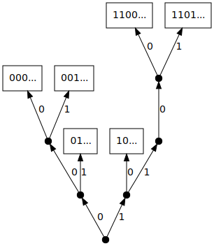
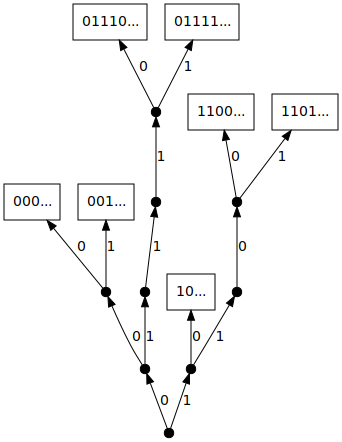

Uncommon suffix tries
 Common assumptions on the source producing the words inserted in a suffix trie
with $n$ leaves lead to a $\log n$ height and saturation level. We provide
an example of a suffix trie whose height increases faster than a power of
$n$ and another one whose saturation level is negligible with respect to $\log n$.
Both are built from VLMC (Variable Length Markov Chain) probabilistic sources and are
easily extended to families of tries having the same properties. The first example
corresponds to a "logarithmic infinite comb" and enjoys a non uniform polynomial
mixing. The second one corresponds to a "factorial infinite comb" for which mixing
is uniform and exponential.
Common assumptions on the source producing the words inserted in a suffix trie
with $n$ leaves lead to a $\log n$ height and saturation level. We provide
an example of a suffix trie whose height increases faster than a power of
$n$ and another one whose saturation level is negligible with respect to $\log n$.
Both are built from VLMC (Variable Length Markov Chain) probabilistic sources and are
easily extended to families of tries having the same properties. The first example
corresponds to a "logarithmic infinite comb" and enjoys a non uniform polynomial
mixing. The second one corresponds to a "factorial infinite comb" for which mixing
is uniform and exponential.
- 1. Introduction
- 2. Infinite combs as sources
- 3. Mixing properties of infinite combs
- 4. Height and saturation level of suffix tries
- 5. Bibliography
Trie (abbreviation of retrieval) is a natural data structure, efficient for searching words in a given set and used in many algorithms as data compression, spell checking or IP addresses lookup. A trie is a digital tree in which words are inserted in external nodes. The trie process grows up by successively inserting words according to their prefixes. A precise definition will be given in Section 4.1.
As soon as a set of words is given, the way they are inserted in the trie is deterministic. Nevertheless, a trie becomes random when the words are randomly drawn: each word is produced by a probabilistic source and $n$ words are chosen (usually independently) to be inserted in a trie. A suffix trie is a trie built on the suffixes of one infinite word. The randomness then comes from the source producing such an infinite word and the successive words inserted in the tree are far from being independent, they are strongly correlated.
Suffix tries, also called suffix trees in the literature, have been developped with tools from analysis of algorithms and information theory on one side and from probability theory and ergodic theory on the other side. Construction algorithms of such trees go back to Weiner [39] in 1973 and many applications in computer science and biology can be found in Gusfield's book [21]. As a major application of suffix tries one can cite an efficient implementation of the famous Lempel-Ziv lossless compression algorithm LZ77. The first results on the height of random suffix trees are due to Szpankowski [37] and Devroye et al. [12], and the most recent results are in Szpankowski [38] and Fayolle [14].
The growing of suffix tries (called prefix trees in Shields' book [35]) is closely related to second occurrences of patterns; this will be precisely explained later in Section 4.1. Consequently, many results on this subject can be found in papers dealing with occurrences of words, renewal theory or waiting times like Shields [34] or Wyner-Ziv [41].
In the present paper we are interested in the height $H_n$ and the saturation
level $\ell_n$ of a suffix trie $\rond T_n$ containing the first $n$ suffixes
of an infinite word produced by a probabilistic source. The analysis of the
height and the saturation level is usually motivated by optimization of the
memory cost. Height is clearly relevant to this point; saturation level is
algorithmically relevant as well because internal nodes below the saturation
level are often replaced by a less expansive table. Such parameters depend
crucially on the characteristics of the source. Most of the above mentioned
results are obtained for memoryless or Markovian sources, while realistic
sources are often more complex. We work here with a more general source model.
It includes nonmarkovian processes where the dependency on past history is
unbounded. It has the advantage of making calculations possible as well.
The source is associated with a so-called Variable Length Markov Chain (VLMC)
(see Rissanen [31] for the seminal work, Galves-Löcherbach
[18] for an overview, and [9] for a
probabilistic frame). We deal with a particular VLMC source defined by an
infinite comb, described hereafter.
A first browse of the literature reveals tries or suffix tries that have a height and a saturation level both growing logarithmically with the number of words inserted. For plain tries, i.e. when the inserted words are independent, the results due to Pittel [28] rely on two assumptions on the source that produces the words: first, the source is uniformly mixing, second, the probability of any word decays exponentially with its length.
Let us also mention the general analysis of tries by Clément et al. [7] for dynamical sources.
For suffix tries, Szpankowski [38] obtains the same result, with a weaker mixing assumption (still uniform though) and with the same hypothesis on the measure of the words. Nevertheless, in [34], Shields states a result on prefixes of ergodic processes suggesting that the saturation level of suffix tries might not necessarily grow logarithmically with the number of words inserted.
Our aim is to exhibit two cases when the behaviour of the height or the saturation level
is no longer logarithmic. The first example is the "logarithmic comb", for
which we show that the mixing is slow in some sense, namely non uniformly polynomial
(see Section 3.4 for a precise statement) and the
measure of some increasing sequence of words decays polynomially. We prove in
Theorem 1 that the height of this trie is larger than a power
of $n$ (when $n$ is the number of inserted suffixes in the tree).
The second example is the "factorial comb", which has a uniformly
exponential mixing, thus fulfilling the mixing hypothesis of Szpankowski
[38], but the measure of some increasing sequence of words
decays faster than any exponential. In this case we prove in
Theorem 2 that the saturation level is negligible with respect
to $\log n$. We prove more precisely that, almost surely,
$\ell _n\in o\left(\frac{\log n}{(\log\log n)^\delta}\right)$, for any $\delta >1$.
The paper is organised as follows. In Section 2, we define a
VLMC source associated with an infinite comb. In Section 3 we give
results on the mixing properties of these sources by explicitely computing the suitable
generating functions in terms of the source data. In Section 4,
the associated suffix tries are built, and the two uncommon behaviours are stated and shown.
The methods are based on two key tools concerning successive occurence times of patterns:
a duality property and the computation of generating functions. The relation between the mixing
of the source and the asymptotic behaviour of the trie is highlighted by the proof
of Proposition 4.
In this section, a VLMC probabilistic source associated with an infinite comb is defined. Moreover, we present the two examples given in introduction: the logarithmic and the factorial combs. We begin with the definition of a general variable length Markov chain associated with a probabilized infinite comb.
The following presentation comes from [9].
Consider the binary tree (represented in Figure 1) whose finite leaves are the words $1, 01, \dots, 0^k1, \dots $ and with an infinite leaf $0^{\infty}$ as well.
The set of leaves is
\[
\mathcal{C}:=\{0^n1,\, n\ge 0\}\cup \{0^\infty\}.
\]
Each leaf is labelled with a Bernoulli distribution on $\{0,1\}$, respectively denoted by $q_{0^k1}, k\geqslant 0$ and $q_{0^\infty}$, i.e.
\[\forall k \geq 0 \quad q_{0^k1}(0)=1-q_{0^k1}(1).\]
This probabilized tree is called the infinite comb.
Let $\mathcal{L}= \{0,1\}^{-\mathbb{N}}$ be the set1 of left-infinite words on the alphabet $\{0,1\}$.
The prefix function
$$\lpref :\mathcal{L}=\{0,1\}^{-\mathbb{N}}\to\mathcal{C}$$
associates to any left-infinite word (reading from right to left) its first suffix appearing as a leaf of the comb. The prefix function indicates the length of the last run of $0$: for instance,
\[
\lpref (\ldots 1000)=0001=0^31.
\]
The VLMC (Variable Length Markov Chain) associated with an infinite comb is the $\rond L$-valued Markov chain $(V_n)_{n\geqslant 0}$ defined by the transitions
$$\g P(V_{n+1} = V_n\alpha | V_n)= q_{\petitlpref (V_n)}(\alpha )
$$
where $\alpha\in\{0,1\}$ is a letter. Notice that the VLMC is entirely determined by the family of distributions $q_{0^{\infty}}, q_{0^k1}, k\geqslant 0$. %Moreover the order of dependence (the memory) depends on the past itself.
From now on, denote $c_0 = 1$ and for $n\geqslant 1$,
$$
c_n:= \prod_{k=0}^{n-1} q_{0^{k}1}(0).
$$
It is proved in [9] that in the irreducible case i.e.
when $q_{0^{\infty}}(0)\not= 1$, there exists a unique stationary probability
measure $\pi$ on $\rond L$ for $(V_n)_n$ if and only if the series $\sum c_n$ converges.
From now on, we assume that this condition is fulfilled and we call
$
S(x):=\sum_{n\geqslant 0} c_n x^n
$(1)
its generating function so that $S(1) = \sum_{n\geqslant 0} c_n$. For any finite word $w$, we denote $\pi(w):=\pi(\rond Lw)$. Computations performed in [9] show that for any $n\geqslant 0$,
$
\pi(10^n)=\frac{c_n}{S(1)} \quad \mbox{and}\quad \pi(0^n)=\frac{\sum_{k \geqslant n}c_k}{S(1)}.
$(2)
Notice that, by disjointness of events $\pi(0^n)=\pi(0^{n+1})+\pi(10^n)$ and by stationarity, $\pi(0^n)=\pi(0^{n+1})+ \pi(0^n1)$ for all $n\geqslant 1$ so that
$
\pi(10^n) = \pi(0^n1) .
$(3)
If $U_n$ denotes the final letter of $V_n$, the random sequence $W=U_0U_1U_2\ldots$ is a right-infinite random word. We define in this way a probabilistic source in the sense of information theory i.e. a mechanism that produces random words.
This VLMC probabilistic source is characterized by the family of nonnegative numbers
$$
p_w:=\g P(W \hbox{ has } w \hbox{ as a prefix }) = \pi(w),
$$
indexed by all finite words $w$. This paper deals with suffix tries built from such sources. More precisely we consider two particular examples of infinite comb defined as follows.
The logarithmic comb is defined by $c_0=1$ and for $n\geqslant 1$,
\[c_n = \frac{1}{n(n+1)(n+2)(n+3)}. \]
The corresponding conditional probabilities on the leaves of the tree are
\[q_1(0)=\frac{1}{24}\quad \mbox{and for }n\geqslant 1, \quad q_{0^n1}(0)=1-\frac{4}{n+4}.\]
The expression of $c_n$ was chosen to make the computations as simple
as possible and also because the square-integrability of the waiting time of
some pattern will be needed (see end of Section 4.3),
guaranteed by
\[\sum_{n\geqslant 0} n^2c_n\lt+\infty.\]
The conditional probabilities on the leaves are defined by
$$
q_{0^n1}(0)= \frac 1{n+2} \quad \mbox{ for }n\geqslant 0,
$$
so that
$$
c_n = \frac 1{(n+1)!}.
$$
In this section, we first precise what we mean by mixing properties of a random
sequence. We refer to Doukhan [13], especially for the notion
of $\psi$-mixing defined in that book. We state in Proposition 1
a general result that provides the mixing coefficient for an infinite comb defined by
$(c_n)_{n\geqslant 0}$ or equivalently by its generating function $S$. This result
is then applied to our two examples. The mixing of the logarithmic comb is polynomial
but not uniform, it is a very weak mixing; the mixing of the factorial comb
is uniform and exponential, it is a very strong mixing. Notice that mixing
properties of some infinite combs have already been investigated by Isola [24],
although with a slight different language.
For a stationary sequence $(U_n)_{n\geqslant 0}$ with stationary measure
$\pi$, we want to measure by means of a suitable coefficient the independence between
two words $A$ and $B$ separated by $n$ letters. The sequence is said to be "mixing"
when this coefficient vanishes when $n$ goes to $+\infty$. Among all types of mixing,
we focus on one of the strongest type: $\psi$-mixing. More precisely, for
$0\leqslant m\leqslant +\infty$, denote by ${\cal F}_0^m$ the $\sigma$-algebra
generated by $\{U_k , 0\leqslant k \leqslant m\}$ and introduce for
$A\in{\cal F}_0^m$ and $B\in{\cal F}_0^{\infty}$ the mixing coefficient
| $\psi(n,A,B)$ | $:=$ | $\frac{\pi(A\cap T^{-(m+1)-n}B)-\pi(A)\pi(B)}{\pi(A)\pi(B)}$ |
| $=$ | $\frac{\sum_{|w|=n}\pi(AwB)-\pi(A)\pi(B)}{\pi(A)\pi(B)}$(4) |
where $T$ is the shift map and where the sum runs over the finite words $w$ with length $|w|=n$.
A sequence $(U_n)_{n\geqslant 0}$ is called $\psi$-mixing whenever
\[\lim_{n\to\infty}\ \sup_{m\geqslant 0,A\in{\cal F}_0^m, B\in{\cal F}_0^{\infty}}|\psi(n,A,B)|=0.\]
In this definition, the convergence to zero is uniform over all words $A$ and $B$. This is not going
to be the case in our first example.
As in Isola [24], we widely use the renewal properties of infinite combs (see
Lemma 1) but more detailed results are needed, in particular we investigate
the lack of uniformity for the logarithmic comb.
$\bullet$ For a comb, recall that $S$ is the generating function of the nonincreasing
sequence $(c_n)_{n\geqslant 0}$ defined by (1).
$\bullet$ Set $\rho_0=0$ and for $n\geqslant 1$,
\[\rho_n:=c_{n-1}-c_{n},\]
with generating function
$$
P(x) := \sum_{n\geqslant 1} \rho_n x^n.
$$
$\bullet$ Define the sequence $(u_n)_{n\geqslant 0}$ by $u_0=1$ and for $n\geqslant 1$,
$
u_n:=\frac{\pi(U_0=1,U_{n}=1)}{\pi(1)}=\frac{1}{\pi(1)}\sum_{|w|=n-1}\pi(1w1),
$(5)
and let
\[U(x):=\sum_{n\geqslant 0}u_nx^n\]
denote its generating function. Hereunder is stated a key lemma that will be widely used
in Proposition 1. In some sense, this kind of relation (sometimes called
Renewal Equation) reflects the renewal properties of the infinite comb.
The sequences $(u_n)_{n\geqslant 0}$ and $(\rho_n)_{n\geqslant 0}$ are connected by the relations:
\[\forall n\geqslant 1,~~u_n=\rho_n+u_1\rho_{n-1}+\ldots+u_{n-1}\rho_1\]
and (consequently)
\[U(x) = \sum_{n=0}^{\infty}u_nx^n=\frac{1}{1-P(x)}=\frac{1}{(1-x)S(x)}.\]
For a finite word $w=\alpha_1\ldots\alpha_m$ such that $w \neq 0^m$, let $l(w)$ denote
the position of the last $1$ in $w$, that is $l(w):=\max\{1\le i\le m,~\alpha_i=1\}$.
Then, the sum in the expression (5) of $u_n$ can be decomposed as follows:
\[\sum_{|w|=n-1}\pi(1w1)=\pi(10^{n-1}1)+\sum_{i=1}^{n-1}\sum_{{|w|=n-1}\atop{l(w)=i}}\pi(1w1).\]
Now, by disjoint union $\pi(10^{n-1})=\pi(10^{n-1}1)+\pi(10^{n})$, so that
\[\pi(10^{n-1}1)=\pi(1)(c_{n-1}-c_{n})=\pi(1)\rho_n.\]
In the same way, for $w=\alpha_1\ldots\alpha_{n-1}$, if $l(w)=i$ then
$\pi(1w1)=\pi(1\alpha_1\ldots\alpha_{i-1}1)\rho_{n-i}$, so that
| $u_n$ | $ = $ | $\rho_n+\sum_{i=1}^{n-1}\rho_{n-i}\frac{1}{\pi(1)}\sum_{|w|=i-1}\pi(1w1)$ |
| $ = $ | $\rho_n+\sum_{i=1}^{n-1}\rho_{n-i}u_{i}$, |
which leads to $U(x)=(1-P(x))^{-1}$ by summation.
∎
The mixing coefficients $\psi(n,A,B)$ are expressed as the $n$-th coefficient
in the series expansion of an analytic function $M^{A,B}$ which is given in
terms of $S$ and $U$. The notation $[x^n] A(x)$ means the coefficient
of $x^n$ in the power expansion of $A(x)$ at the origin.
Denote the remainders associated with the series $S(x)$ by
$$
r_n : = \sum_{k\geqslant n} c_k, \quad R_n(x):=\sum_{k\geqslant n}c_k x^k
$$
and for $a\geqslant 0$, define the "shifted" generating function
$
P_a(x):=\frac 1{c_a}\sum _{n\geqslant 1}\rho _{a+n}x^n=x+\frac{x-1}{c_ax^a}R_{a+1}(x).
$(6)
For any finite word $A$ and any word $B$, the identity
\[\psi(n,A,B)=[x^{n+1}] M^{A,B}(x)\]
holds for the generating functions $M^{A,B}$ respectively defined by:
- if $A=A'1$ and $B=1B'$ where $A'$ and $B'$ are any finite words, then $$M^{A,B}(x) = M(x) := \displaystyle\frac{S(x)-S(1)}{(x-1)S(x)};$$
- if $A=A'10^a$ and $B=0^b1B'$ where $A'$ and $B'$ are any finite words and $a+b\geqslant 1$, then \[M^{A,B}(x) := S(1)\displaystyle\frac{c_{a+b}}{c_ac_b}P_{a+b}(x) + U(x)\left[ S(1)P_a(x)P_b(x)-S(x)\right];\]
- if $A=0^a$ and $B=0^b$ with $a,b\geqslant 1$, then \[M^{A,B}(x) := S(1)\displaystyle\frac{1}{r_ar_b}\sum _{n\geqslant 1}r_{a+b+n}x^n + \displaystyle U(x) \left[ \frac{S(1)R_a(x)R_b(x)}{r_ar_bx^{a+b-2}}-S(x)\right]; \]
- if $A=A'10^a$ and $B=0^b$ where $A'$ is any finite words and $a,b\geqslant 0$, then $$ M^{A,B}(x) := S(1)\displaystyle\frac{1}{c_ar_bx^{a+b-1}}R_{a+b}(x)+ \displaystyle U(x) \left[ \frac{S(1)P_a(x)R_b(x)}{c_ar_bx^{b-1}}-S(x)\right]; $$
- if $A=0^a$ and $B=0^b1B'$ where $B'$ is any finite words and $a,b\geqslant 0$, then \[ M^{A,B}(x) %= M^{a,b}(x) := S(1)\displaystyle\frac{1}{r_ac_bx^{a+b-1}}R_{a+b}(x)+ \displaystyle U(x) \left[ \frac{S(1)R_a(x)P_b(x)}{r_ac_bx^{a-1}}-S(x)\right]. \]
It is worth noticing that the asymptotics of $\psi(n,A,B)$ may not be uniform in all
words $A$ and $B$. We call this kind of system non-uniformly $\psi$-mixing. It may happen
that $\psi(n,A,B)$ goes to zero for any fixed $A$ and $B$, but (for example, in case (iii)) the
larger $a$ or $b$, the slower the convergence, preventing it from being uniform.
The following identity has been established in [9] (see formula (17) in
that paper) and will be used many times in the sequel. For any two finite words $w$ and $w'$,
$
\pi(w1w')\pi(1)=\pi(w1)\pi(1w').
$(7)
- If $A=A'1$ and $B=1B'$, then (7) yields \[\pi(AwB)=\pi(A'1w1B')=\frac{\pi(A'1)}{\pi(1)}\pi(1w1B')=S(1)\pi(A)\pi(B)\frac{\pi(1w1)}{\pi(1)}.\] So $$ \psi(n,A,B) = S(1) u_{n+1} - 1 $$ and by Lemma Lemma 1, the result follows.
-
Let $A=A'10^a$ and $B=0^b1B'$ with $a,b\geqslant 0$ and $a+b\neq 0$.
To begin with,
\[\pi(AwB)=\frac{1}{\pi(1)}\pi(A'1)\pi(10^aw0^b1B')=\frac{1}{\pi(1)^2}\pi(A'1)\pi(10^aw0^b1)\pi(1B').\]
Furthermore, $\pi(A)=c_a\pi(A'1)$ and by (3), $\pi(0^b1)=\pi(10^b)$, so it comes
\[\pi(B)=\frac{1}{\pi(1)}\pi(0^b1)\pi(1B')=\frac{\pi(10^b)}{\pi(1)}\pi(1B')=c_b\pi(1B').\]
Therefore,
\[\pi(AwB)=\frac{\pi(A)\pi(B)}{c_ac_b\pi(1)^2}\pi(10^aw0^b1).\]
Using $\pi(1)S(1)=1$, this proves
\[\psi(n,A,B)=S(1)\frac{v_{n}^{a,b}}{c_ac_b}-1\]
where
\[v_n^{a,b}:=\frac{1}{\pi(1)}\sum_{|w|=n}\pi(10^aw0^b1).\]
As in the proof of the previous lemma, if $w=\alpha_1\ldots\alpha_{m}$ is any finite word different
from $0^m$, we call $f(w):=\min\{1\le i \le m, \alpha_{i}=1\}$ the first place where $1$ can be
seen in $w$ and recall that $l(w)$ denotes the last place where $1$ can be seen in $w$. One has
\[\sum_{|w|=n}\pi(10^aw0^b1) = \pi(10^{a+n+b}1)+\sum_{1\le i\le j\le n}\sum_{{{|w|=n}\atop{f(w)=i,l(w)=j}}}\pi(10^aw0^b1).\]
If $i=j$ then $w$ is the word $0^{i-1}10^{n-i}$, else $w$ is of the form
$0^{i-1}1w'10^{n-j}$, with $|w'|=j-i-1$. Hence, the previous sum can be rewritten as
$\sum_{|w|=n}\pi(10^aw0^b1)$ $ = $ $\pi(1)\rho_{a+b+n+1}+\pi(1)\sum_{i=1}^{n}\rho_{a+i}\rho_{n+1-i+b}$ $ + $ $\sum_{1\leqslant i\lt j\leqslant n}\sum_{{{w}\atop{|w|=j-i-1}}}\pi(10^{a+i-1}1w10^{n-j+b}1)$.
Equation (7) shows
$\pi(10^{a+i-1}1w10^{n-j+b}1)$ $ = $ $\frac{\pi(10^{a+i-1}1)}{\pi(1)}\frac{\pi(1w1)}{\pi(1)}\pi(10^{n-j+b}1)$ $ = $ $\rho_{a+i}\rho_{n+1-j+b}\pi(1w1)$.
This implies:
\[v_n^{a,b}=\rho_{a+b+n+1}+\sum_{i=1}^{n}\rho_{a+i}\rho_{n+1-i+b}
+ \sum_{1\le i\lt j\le n}\rho_{a+i}\rho_{n+1-j+b}\sum_{w, |w|=j-i11}\frac{\pi(1w1)}{\pi(1)}.\]
Recalling that $u_0=1$, one gets
\[v_n^{a,b}=\rho_{a+b+n+1}+\sum_{1\le i\le j\le n}\rho_{a+i}\rho_{n+1-j+b}u_{j-i}\]
which gives the result ii) with Lemma 1.
-
Let $A=0^a$ and $B=0^b$ with $a,b\geqslant 1$.
Set
\[v_n^{a,b}:=\frac{1}{\pi(1)}\sum_{|w|=n}\pi(0^aw0^b).\]
First, recall that, due to (2), $\pi(A)=\pi(1)r_a$ and $\pi(B)=\pi(1)r_b$.
Consequently,
\[\psi(n,A,B)=\frac{\pi(1)v_{n}^{a,b}-\pi(A)\pi(B)}{\pi(A)\pi(B)}=S(1)\frac{v_{n}^{a,b}}{r_ar_b}-1.\]
Let $w$ be a finite word with $|w|=n$. If $w=0^{n}$, then
\[\pi(AwB)=\pi(0^{a+n+b})=\pi(1)r_{a+b+n}.\]
If not, let $f(w)$ denote as before the first position of $1$ in $w$ and $l(w)$ the last one in $w$. If $f(w)=l(w)$, then
$\pi(AwB)$ $ = $ $\pi(0^{a+f(w)-1}10^{n-f(w)+b})$ $ = $ $\frac{1}{\pi(1)}\pi(0^{a+f(w)-1}1)\pi(10^{n-f(w)+b})=\pi(1)c_{a+f(w)-1}c_{n-f(w)+b}$.
If $f(w)\lt l(w)$, then writing $w=w_1 \ldots w_{n}$,
$\pi(AwB)$ $ = $ $\pi(0^{a+f(w)-1}1w_{f(w)+1}\ldots w_{l(w)-1}10^{n-l(w)})$ $ = $ $\frac{1}{\pi(1)^2}\pi(0^{a+f(w)-1}1)\pi(1w_{f(w)+1}\ldots w_{l(w)-1}1)\pi(10^{n-l(w)+b})$.
Summing yields
$v_n^{a,b}$ $ = $ $r_{a+b+n}+\displaystyle\sum_{i=1}^{n}c_{a+i-1}c_{n+b-i}+\sum_{{{i,j=1}\atop{i\lt j}}}^{n}\sum_{{{w,}\atop{|w|=j-i-1}}}c_{a+i-1}\frac{\pi(1w1)}{\pi(1)}c_{n+b-j}$ $ = $ $r_{a+b+n}+\displaystyle\sum_{1\le i\le j\le n}c_{a+i-1}c_{n+b-j}u_{j-i}$,
which gives the desired result. The last two items, left to the reader, follow the same guidelines.
∎
Consider the first example in Section 2, that is the probabilized infinite
comb defined by $c_0 = 1$ and for any $n\geqslant 1$ by
$$
c_n= \frac{1}{n(n+1)(n+2)(n+3)}.
$$
When $|x|\lt 1$, the series $S(x)$ writes as follows
$
S(x)=\frac{47}{36}-\frac{5}{12x}+\frac{1}{6x^2}+\frac{(1-x)^3\log(1-x)}{6x^3}
$(8)
and
\[S(1)=\frac{19}{18}.\]
With Proposition 1, the asymptotics of the mixing coefficient comes from
singularity analysis of the generating functions $M^{A,B}$.
The VLMC defined by the logarithmic infinite comb has a non-uniform polynomial
mixing of the following form:
for any finite words $A$ and $B$, there exists a positive constant $C_{A,B}$
such that for any $n\geqslant 1$,
$$
|\psi (n,A,B)|\leqslant\frac {C_{A,B}}{n^3}.
$$
The $C_{A,B}$ cannot be bounded above by some constant that does not depend on $A$ and $B$,
as can be seen hereunder in the proof.
Indeed, we show that if $a$ and $b$ are positive integers,
$$
\psi(n,0^a,0^b)\sim\frac 13\left( \frac{S(1)}{r_ar_b}-\frac 1{r_a}-\frac 1{r_b}+\frac 1{S(1)}\right)\frac 1{n^3}
$$
as $n$ goes to infinity. In particular, $\psi(n,0,0^n)$ tends to the positive constant $\frac{13}{6}$.
For any finite words $A$ and $B$ in case i) of
Proposition 1, one deals with $U(x)=\left((1-x)S(x)\right)^{-1}$ which
has $1$ as a unique dominant singularity. Indeed, $1$ is the unique dominant
singularity of $S$, so that the dominant singularities of $U$ are $1$ or
zeroes of $S$ contained in the closed unit disc. But $S$ does not vanish on
the closed unit disc, because for any $z$ such that $ |z| \leqslant 1$,
$$|S(z)| \geqslant 1- \sum_{n\geqslant 1} \frac{1}{n(n+1)(n+2)(n+3)} = 1-(S(1)-1)=\frac{17}{18}.$$
Since
\[M(x) =\frac{S(x)-S(1)}{(x-1)S(x)}= S(1)U(x) - \frac 1{1-x},\]
the unique dominant singularity of $M$ is $1$, and when $x$ tends to $1$ in
the unit disc, (8) leads to
\[
M(x) = A(x)-\frac{1}{6S(1)}(1-x)^2\log(1-x)+\grandO{(1-x)^3\log(1-x)}
\]
where $A(x)$ is a polynomial of degree $2$. Using a classical transfer theorem
based on the analysis of the singularities of $M$
(see Flajolet and Sedgewick [15], section VI.4, p. 393 and special case p. 387"),
we get
\[\psi(n-1,w1,1w')= [x^n] M(x)=\frac{1}{3S(1)}\frac{1}{n^3}+\petito{\frac{1}{n^3}}.\]
The cases ii), iii),
iv) and v) of Proposition 1 are
of the same kind, and we completely deal with case iii).
Case iii): words of the form $A=0^a$ and $B=0^b$, $a,b\geqslant 1$.
As shown in Proposition 1, one has to compute the asymptotics of the $n$-th
coefficient of the Taylor series of the function
$
M^{a,b}(x):=S(1)\displaystyle\frac{1}{r_ar_b}\sum _{n\geqslant 1}r_{a+b+n}x^n + \displaystyle U(x)\left[ \frac{S(1)R_a(x)R_b(x)}{r_ar_bx^{a+b-2}}-S(x)\right].
$(9)
The contribution of the left-hand term of this sum is directly given by the
asymptotics of the remainder
$$
r_n=\sum _{k\geqslant n}c_k=\frac{1}{3n(n+1)(n+2)}=\frac{1}{3n^3}+\mathcal{O}\left( \frac {1}{n^4}\right) .
$$
By means of singularity analysis, we deal with the right-hand term
$$
N^{a,b}(x):=\displaystyle U(x)\left[ \frac{S(1)R_a(x)R_b(x)}{r_ar_bx^{a+b-2}}-S(x)\right].
$$
Since $1$ is the only dominant singularity of $S$ and $U$ and consequently of any $R_a$,
it suffices to compute
an expansion of $N^{a,b}(x)$ at $x=1$.
It follows from (8) that
$U$, $S$ and $R_a$ admit expansions near $1$ of the forms
| $U(x)$ | $ = $ | $\frac{1}{S(1)(1-x)}+\mbox{polynomial}+\frac{1}{6S(1)^2}(1-x)^2\log (1-x)+\mathcal{O}(1-x)^2$ | ,
| $S(x)$ | $ = $ | $\mbox{polynomial}+\frac{1}{6}(1-x)^3\log (1-x)+\mathcal{O}(1-x)^3$, |
| $R_a(x)$ | $ = $ | $\mbox{polynomial}+\frac{1}{6}(1-x)^3\log (1-x)+\mathcal{O}(1-x)^3$. |
Consequently,
$$
N^{a,b}(x)=\frac 16\left( \frac 1{r_a}+\frac 1{r_b}-\frac 1{S(1)}\right)(1-x)^2\log (1-x)+\mathcal{O}(1-x)^2
$$
in a neighbourhood of $1$ in the unit disc so that, by singularity analysis,
$$
[x^n]N^{a,b}(x)=-\frac 13\left( \frac 1{r_a}+\frac 1{r_b}-\frac 1{S(1)}\right)\frac 1{n^3}+o\left(\frac 1{n^3}\right).
$$
Consequently (9) leads to
\[
\psi(n-1,0^a,0^b)= [x^n] M^{a,b}(x)
\sim\frac 13\left( \frac{S(1)}{r_ar_b}-\frac 1{r_a}-\frac 1{r_b}+\frac 1{S(1)}\right)\frac 1{n^3}
%\sim\frac q3\frac{(S(1)-r_a)(S(1)-r_b)}{S(1)r_ar_b}\frac 1{n^3}
\]
as $n$ tends to infinity, showing the mixing inequality and the non uniformity.
The remaining cases ii), iv)
and v) are of the same flavour.
∎
Consider now the second Example in Section 2, that is the
probabilized infinite comb defined by
$$
\forall n\in\g N,~c_n=\frac 1{(n+1)!}.
$$
With previous notations, one gets
$$
S(x)=\frac {e^x-1}x
{\rm and }
U(x)=\frac {x}{(1-x)(e^x-1)}.
$$
The VLMC defined by the factorial infinite comb has a uniform
exponential mixing of the following form: there exists a positive
constant $C$ such that for any $n\geqslant 1$ and for any finite
words $A$ and $B$,
$$
|\psi (n,A,B)|\leqslant\frac C{(2\pi )^n}.
$$
- First case of mixing in Proposition 1: $A=A'1$ and $B=1B'$.
Because of Proposition 1, the proof consists in computing the
asymptotics of $[x^n] M(x)$. We make use of singularity analysis. The
dominant singularities of
$$
M(x)=\frac{S(x)-S(1)}{(x-1)S(x)}
$$
are readily seen to be $2i\pi$ and $-2i\pi$, and
$$
M(x)\ \equivalent{2i\pi}\frac{1-e}{1-2i\pi}\cdot\frac{1}{1-\frac{z}{2i\pi}}.
$$
The behaviour of $M$ in a neighbourhood of $-2i\pi$ is obtained by complex conjugacy.
Singularity analysis via transfer theorem provides thus that
$$
[x^n]M(x)
\equivalent{n\to +\infty}\frac {2(e-1)}{1+4\pi ^2}\left( \frac 1{2\pi }\right) ^n \epsilon _n
$$
where
$$
\epsilon _n=
\left\{
\begin{array}{l}
1{\rm\ if\ }n{\rm\ is\ even}\\
2\pi{\rm\ if\ }n{\rm\ is\ odd}.
\end{array}
\right.
$$
- Second case of mixing: $A=A'10^a$ and $B=0^b1B'$.
Because of Proposition 1, one has to compute $[x^n]M^{a,b}(x)$
with
$$
M^{a,b}(x):= S(1)\frac{c_{a+b}}{c_ac_b}P_{a+b}(x)
+\frac 1{S(x)}\cdot\frac 1{1-x}\Big[ S(1)P_a(x)P_b(x)-S(x)\Big] ,
$$
where $ P_{a+b}$ is an entire function.
In this last formula, the brackets contain an entire function
that vanishes at $1$ so that the dominant singularities
of $M^{a,b}$ are again those of $S^{-1}$, namely $\pm2i\pi$.
The expansion of $M^{a,b}(x)$ at $2i\pi$ writes thus
$$
M^{a,b}(x)\ \equivalent{2i\pi}\frac{-S(1)P_a(2i\pi )P_b(2i\pi )}{1-2i\pi}\cdot\frac{1}{1-\frac{x}{2i\pi}}
$$
which implies, by singularity analysis, that
$$
[x^n]M^{a,b}(x)\equivalent{n\to+\infty}2\Re\left(\frac{1-e}{1-2i\pi}\cdot\frac{P_a(2i\pi )P_b(2i\pi )}{(2i\pi )^n}\right) .
$$
Besides, the remainder of the exponential series satisfies
$
\sum _{n\geqslant a}\frac{x^n}{n!}=\frac{x^a}{a!}\left( 1+\frac xa+\mathcal{O}(\frac 1a)\right)
$(10)
when $a$ tends to infinity.
Consequently, by Formula (6), $P_a(2i\pi )$
tends to $2i\pi$ as $a$ tends to infinity
so that one gets a positive constant $C_1$ that does not
depend on $a$ and $b$ such that for any $n\geqslant 1$,
$$
\left| \psi(n, A,B)\right|\leqslant\frac{C_1}{(2\pi )^n}.
$$
- Third case of mixing: $A=0^a$ and $B=0^b$.
This time, one has to compute $[x^n]M^{a,b}(x)$
with
$$
M^{a,b}(x) := S(1)\displaystyle\frac{1}{r_ar_b}\sum _{n\geqslant 1}r_{a+b+n}x^n + \displaystyle U(x)
\left[ \frac{S(1)R_a(x)R_b(x)}{r_ar_bx^{a+b-2}}-S(x)\right]
$$
the first term being an entire function.
Here again, the dominant singularities of $M^{a,b}$ are located at $\pm 2i\pi$ and
$$
M^{a,b}(x)\ \equivalent{2i\pi}\frac{-S(1)R_a(2i\pi )R_b(2i\pi )}{(1-2i\pi )r_ar_b(2i\pi )^{a+b-2}}\cdot\frac{1}{1-\frac{x}{2i\pi}}
$$
which implies, by singularity analysis, that
$$
\psi(n-1,A,B) \equivalent{n\to+\infty}
2\Re\left(\frac{1-e}{1-2i\pi}\cdot\frac{R_a(2i\pi )R_b(2i\pi )}{r_ar_b(2i\pi )^{a+b-2}}\frac{1}{(2i\pi )^n}\right) .
$$
Once more, because of (10), this implies that
there is a positive constant $C_2$ independent of $a$ and $b$ and
such that for any $n\geqslant 1$,
$$
\left| \psi(n,A,B)\right|\leqslant\frac{C_2}{(2\pi )^n}.
$$
- and v): both remaining cases of mixing that respectively correspond to words of the form $A=A'10^a$, $B=0^b$ and $A=0^a$, $B=0^b1B'$ are of the same vein and lead to similar results.
In this section, we consider a suffix trie process $(\rond{T}_n)_{n\geq 1}$
associated with an infinite random word generated by an infinite comb.
A precise definition of tries and suffix tries is given in
section 4.1. We are interested in the height
and the saturation level of such a suffix trie.
Our method to study these two parameters uses a duality property à
la Pittel developed in Section 4.2, together with
a careful and explicit calculation of the generating function of the
second occurrence of a word (in Section 4.3) which
can be achieved for any infinite comb. These calculations are not so
intricate because they are strongly related to the mixing coefficient
and the mixing properties detailed in Section 3.
More specifically, we look at our two favourite examples, the logarithmic
comb and the factorial comb. We prove in Section 4.5
that the height of the first one is not logarithmic but polynomial
and in Section 4.6 that the saturation
level of the second one is not logarithmic either but negligibly smaller.
Remark that despite the very particular form of the comb in the wide
family of variable length Markov models, the comb sources provide a
spectrum of asymptotic behaviours for the suffix tries.
Let $(y_n)_{n\geqslant 1}$ be a sequence of right-infinite words
on $\{ 0,1\}$.
With this sequence is associated a trie process
$(\rond{T}_n)_{n\geq 1}$ which is a planar unary-binary tree increasing
sequence defined the following way.
The tree $\rond{T}_n$ contains the words $y_1,\dots ,y_n$ in its leaves.
It is obtained by a sequential construction, inserting the words $y_n$
successively.
At the beginning, $\rond T_1$ is the tree containing the root and the
leaf $0\dots$ (resp. the leaf $1\dots$) if $y_1$ begins with $0$ (resp. with $1$).
For $n\geq 2$, given the tree $\rond{T}_{n-1}$, the word $y_n$ is inserted
as follows. We go through the tree along the branch whose nodes are encoded
by the successive prefixes of $y_n$; when the branch ends, if an internal
node is reached, then $y_n$ is inserted at the free leaf, else we make the
branch grow comparing the next letters of both words until they can be
inserted in two different leaves. As one can clearly see on
Figure 2 a trie is not a complete tree and
the insertion of a word can make a branch grow by more than one level.
Notice that if the trie contains a finite word $w$ as internal node, there
are at least two already inserted infinite words $y_n$ that have $w$ as a prefix.
This indicates why the second occurrence of a word is prominent in the growing of a trie.
|  | $\longrightarrow$ |  |
Let $m:=a_1a_2a_3 \ldots$ be an infinite word on $\{0,1\}$.
The suffix trie $\rond{T}_n$ (with $n$ leaves) associated
with $m$ is the trie built from the first $n$ suffixes of $m$ one obtains
by deleting successively the left-most letter, that is
\[
y_1=m,~y_2=a_2a_3a_4\dots, ~y_3=a_3a_4\dots, ~\dots,~y_n=a_na_{n+1}\dots
\]
For a given trie $\rond{T}_n$, we are mainly interested in the height
$H_n$ which is the maximal depth of an internal node of $\rond{T}_n$ and the
saturation level $\ell_n$ which is the maximal depth up to which all
the internal nodes are present in $\rond{T}_n$.
Formally, if $\partial \rond T_n$ denotes the set of leaves of $\rond T_n$,
| $H_n$ | $=$ | $\max_{u \in \rond{T}_n\setminus \partial \rond{T}_n} \big\{ |u| \big\}$ |
| $\ell_n$ | $=$ | $\max \big\{j \in \N | \ \# \{u \in \rond{T}_n\setminus \partial \rond{T}_n, |u|=j\}=2^j\big\}$. |
See Figure Figure 3 for an example.
Note that the saturation level should not be mistaken for the shortest path up to a leaf.
Let $(U_n)_{n\geqslant 1}$ be an infinite random word generated by some infinite
comb and $(\rond{T}_n)_{n\geqslant 1}$ be the associated suffix trie process. We
denote by $\rond R$ the set of right-infinite words. Besides, we define hereunder
two random variables having a key role in the proof of Theorem 1
and Theorem 2. This method goes back to Pittel [28].
Let $s\in\rond R$ be a deterministic infinite sequence and $s ^{(k)}$ its prefix of length $k$. For $n\geq 1$,
| $X_{n}(s)$ | $:=$ | $\left \{ \begin{array}{l} 0 \ \mbox{if}\ s^{(1)}\ \mbox{is not in}\ \rond{T}_{n}\\ \max \{k\geqslant 1 \ |\ \mbox{the word}\ s ^{(k)} \mbox{ is already in } \rond{T}_{n}\setminus \partial \rond{T}_n\}, \\ \end{array} \right.$ |
| $T_{k}(s)$ | $:=$ | $\min\{n\geqslant 1\ |\ X_{n}(s)=k\}$, |
where "$s ^{(k)}$ is in $\rond{T}_{n}\setminus \partial \rond{T}_n$"
stands for: there exists an internal node $v$ in $\rond{T}_{n}$ such that
$s ^{(k)}$ encodes $v$. For any $k\geqslant 1$, $T_{k}(s)$ denotes the
number of leaves of the first tree "containing" $s^{(k)}$.
See Figure 4 for an example.
Thus, the saturation level $\ell_n$ and the height $H_n$ can be
described using $X_n(s)$:
$
\ell_n=\min_{s\in \rond R} X_n(s) \quad \mbox{and}\quad H_n=\max_{s\in \rond R} X_n(s).
$(11)
Notice that the notation $X_n(s)$ is not exactly the same as in
Pittel [28] so that $\ell_n$ does not correspond to the
shortest path in $\mathcal{T}_n$.
Remark that $X_n(s)$ and $T_k(s)$ are in duality in the following sense:
for all positive integers $k$ and $n$, one has the equality of the events
$
\{ X_{n}(s) \geqslant k \} = \{ T_{k}(s) \leqslant n \}.
$(12)
The random variable $T_{k}(s)$ (if $k\geqslant 2$) also represents the
waiting time of the second occurrence of the deterministic word
$s^{(k)}$ in the random sequence $(U_n)_{n\geq 1}$, i.e.
one has to wait $T_{k}(s)$ for the source to create a prefix containing
exactly two occurrences of $s^{(k)}$. More precisely, for
$k \geqslant 2$, $T_{k}(s)$ can be rewritten as
| $T_k(s)=\min\Bigl\{n\geqslant 1\ \big| U_{n}U_{n+1}\ldots U_{n+k-1}$ | $=s^{(k)} \mbox{ and } \exists ! j\lt n \mbox{ such that } $ |
| $U_{j}U_{j+1}\ldots U_{j+k-1}$ | $=s^{(k)}\Bigr\}$. |
Notice that $T_k(s)$ denotes the beginning of the second occurrence
of $s^{(k)}$ whereas in [9], $\tau^{(2)}\left(s^{(k)}\right)$
denotes the end of the second occurrence of $s^{(k)}$, so that
$
\tau^{(2)}\left(s^{(k)}\right)=T_k(s)+k.
$(13)
More generally, in [9] , for any $r\geqslant 1$, the random
waiting time $\tau^{(r)}(w)$ is defined as the end of the $r$-th occurrence
of $w$ in the sequence $(U_n)_{n\geqslant 1}$ and the generating function of the
$\tau^{(r)}$ is calculated. We go over these calculations in the sequel.
Let $k\geqslant 1$. Let also $w=10^{k-1}$ and $\tau^{(2)}(w)$ be the
end of the second occurrence of $w$ in a sequence generated by a comb defined
by $(c_n)_{n\geqslant 0}$. Let $S$ and $U$ be the ordinary generating
functions defined in Section 3.1. The
probability generating function of $\tau^{(2)}(w)$ is
\[
\Phi^{(2)}_w(x) = \frac{c_{k-1}^2x^{2k-1}\big(U(x)-1\big)}{S(1)(1-x)\big[ 1+c_{k-1}x^{k-1}(U(x)-1)\big] ^2}.
\]
Furthermore, as soon as $\sum_{n \geqslant 1}n^2c_n \lt \infty$, the random
variable $\tau^{(2)}(w)$
is square-integrable and
$
\g E(\tau^{(2)}(w))=\frac{2S(1)}{c_{k-1}}+o\left(\frac{1}{c_{k-1}}\right), \quad \Var(\tau^{(2)}(w))=\frac{2S(1)^2}{c_{k-1}^2}+o\left(\frac{1}{c_{k-1}^2}\right).
$(14)
For any $r\geqslant 1
$, let $\tau^{(r)}(w)$ denote the end of the $r$-th occurrence of $w$
in a random sequence generated by a comb and $\Phi_w^{(r)}$ its
probability generating function. The reversed word
of $c=\alpha _1\dots\alpha _N$ will be denoted by the overline
$\overline c:=\alpha _N\dots\alpha _1$
We use a result of [9] that computes these generating
functions in terms of stationary probabilities $q_c^{(n)}$. These
probabilities measure the occurrence of a finite word after $n$ steps,
conditioned to start from the word $\overline{c}$.
More precisely, for any finite words $u$ and $\overline{c}$ and for any
$n\geqslant 0$, let
\[q_c^{(n)}(u):=\pi\left(U_{n-|u|+|c|+1}\ldots U_{n+|c|}=u\big| U_{1}\ldots U_{|c|}=\overline c\right).\]
It is shown in [9] that, for $|x|\lt 1$,
$$
\Phi_w^{(1)}(x)=\frac{x^k\pi(w)}{(1-x)S_w(x)}
$$
and for $r\geq 1$,
\[\Phi_w^{(r)}(x)=\Phi_w^{(1)}(x)\left(1-\frac{1}{S_w(x)}\right)^{r-1}
\]
where
| $S_w(x)$ | $:=$ | $C_w(x) + \sum_{n=k}^{\infty}q_{\petitlpref(w)}^{(n)}(w)x^n$, |
| $C_w(x)$ | $:=$ | $1+\sum_{j=1}^{k-1}\ind{w_{j+1}\ldots w_{k}=w_{1}\ldots w_{k-j}}q_{\petitlpref(w)}^{(j)}\left(w_{k-j+1} \ldots w_k\right)x^j$. |
In the particular case when $w=10^{k-1}$, then
$\lpref(w)=\overline{w}=0^{k-1}1$ and $\pi(w)=\frac{c_{k-1}}{S(1)}$.
Moreover, Definition (4) of the mixing
coefficient and Proposition 1 i)
imply successively that
| $q_{\petitlpref(w)}^{(n)}(w) $ | $= \pi\Big(U_{n+k-|w|+1}\ldots U_{n+k}=w\Big| U_{1}\ldots U_k=\lpref(w)\Big)$ |
| $ = \pi(w) \Big( \psi\big( n-k,\lpref (w),w\big) +1\Big)$ | |
| $ = \pi(w) S(1)u_{n-k+1}$ | |
| $= c_{k-1}u_{n-k+1}$, |
This relation makes more explicit the link between successive occurence times and mixing.
This leads to
\[\sum_{n\geqslant k}q_{\petitlpref(w)}^{(n)}(w)x^n=c_{k-1}x^{k-1}\sum_{n\geqslant 1}u_nx^n=c_{k-1}x^{k-1}\big( U(x)-1\big) .\]
Furthermore, there is no auto-correlation structure inside $w$ so that $C_w(x)=1$ and
\[S_w(x)=1+c_{k-1}x^{k-1}\big( U(x)-1\big) .\]
This entails
\[\Phi^{(1)}_w(x)=\frac{c_{k-1}x^k}{S(1)(1-x)\left[ 1+c_{k-1}x^{k-1}\big( U(x)-1\big)\right]}\]
and
| $ \Phi^{(2)}_w(x)$ | $ = $ | $\Phi^{(1)}_w(x)\left(1-\frac{1}{S_w(x)}\right)$ |
| $ = $ | $\frac{c_{k-1}^2x^{2k-1}\big( U(x)-1\big)}{S(1)(1-x)\left[ 1+c_{k-1}x^{k-1}\big( U(x)-1\big)\right] ^2}$ |
which is the announced result.
The assumption
\[\sum_{n \geqslant 1}n^2c_n \lt \infty\]
makes $U$ twice differentiable and elementary calculations lead to
| $(\Phi_w^{(1)})'(1)=\frac{S(1)}{c_{k-1}}-S(1)+1+\frac{S'(1)}{S(1)}, \qquad (\Phi_w^{(2)})'(1)=(\Phi_w^{(1)})'(1)+\frac{S(1)}{c_{k-1}},$ | ||
| $(\Phi_w^{(1)})''(1)=\frac{2S(1)^2}{c_{k-1}^2}+o\left(\frac{1}{c_{k-1}^2}\right)\quad \mbox{and} \quad (\Phi_w^{(2)})''(1)=\frac{6S(1)^2}{c_{k-1}^2}+o\left(\frac{1}{c_{k-1}^2}\right)$, |
and finally to (14).
∎
Let $h_+$ and $h_-$ be the constants in $[0,+\infty ]$ defined by
$
h_+ := \lim_{n\to +\infty}\frac{1}{n} \max\Bigl\{\ln\Bigl(\frac{1}{\pi\left(w\right)}\Bigr)\ \Bigr\}
\mbox{ and }h_- := \lim_{n\to +\infty}\frac{1}{n} \min\Bigl\{\ln\Bigl(\frac{1}{\pi\left(w\right)}\Bigr)\ \Bigr\},
$(15)
where the maximum and the minimum range over the words $w$ of length $n$ with
$\pi\left({w}\right)>0$. In their papers, Pittel [28] and
Szpankowski [38] only deal with the cases $h_+\lt +\infty$ and
$h_->0$, which amounts to saying that the probability of any word is exponentially
decreasing with its length. Here, we focus on our two examples for which these
assumptions are not fulfilled. More precisely, for the logarithmic infinite comb,
(2) implies that $\pi(10^n)$ is of order $n^{-4}$, so that
$$
h_- \leqslant \lim_{n\to +\infty}\frac{1}{n} \ln\Bigl(\frac{1}{\pi\left(10^{n-1}\right)}\Bigr) = 4\lim_{n\to +\infty}\frac{\ln n}{n} =0.
$$
Besides, for the factorial infinite comb, $\pi(10^n)$ is of order $\frac 1{(n+1)!}$ so that
$$
h_+ \geqslant \lim_{n\to +\infty}\frac{1}{n} \ln\Bigl(\frac{1}{\pi\left(10^{n-1}\right)}\Bigr) = \lim_{n\to +\infty}\frac{\log n!}{n} = +\infty .
$$
For these two models, the asymptotic behaviour of the lengths of the branches
is not always logarithmic, as can be seen in the two following theorems, shown in
Sections 4.5 and 4.6.
Let $\rond{T}_n$ be the suffix trie built from the $n$ first suffixes of a
sequence generated by a logarithmic infinite comb. Then, the height $H_n$
of $\rond{T}_n$ satisfies
\[\forall \delta > 0, \hskip 1cm \frac{H_n}{n^{\frac 14 - \delta}}
~\limite{n\to \infty}{}~+\infty \quad \mbox{in probability.}
\]
Let $\rond{T}_n$ be the suffix trie built from the $n$ first suffixes of the sequence generated by a factorial infinite comb. Then, the saturation level $\ell_n$ of $\rond{T}_n$ satisfies: for any $\delta >1$, almost surely, when $n$ tends to infinity, $$ \ell _n\in o\left(\frac{\log n}{(\log\log n)^\delta}\right). $$
The behaviour of the height of the factorial infinite comb can be
deduced from Szpankowski [38]. Namely the property of uniform mixing
stated in Proposition 3 implies
the existence of two positive constants $C$ and $\gamma$ such
that, for every integer $n\geqslant 1$ and for every word $w$ of length $n$,
$\pi(w)\leqslant Ce^{-\gamma n}$ (see Galves and
Schmitt [19] for a proof). This
entails $h_2\geqslant\frac{\gamma}{2}>0$ and therefore Theorem 2. in
Szpankowski [38] applies: $\frac{H_n}{\log n}$ converges
almost surely to
$\frac{1}{h_2}$.
As for the saturation level of the logarithmic infinite comb, the results of
[38] no longer apply since the process does not enjoy the uniform
mixing property. In spite of that we conjecture that the saturation level grows like $\log n$.
We do not go further on this subject because it is not the main point of the present paper,
but we think the techniques used here should help to prove such a result.
The dynamic asymptotics of the height and of the saturation level can be
visualized on Figure 5.
The number $n$ of leaves of the suffix trie is put on the $x$-axis while heights or
saturation levels are put on the $y$-axis (mean values of $25$ simulations).
Plain lines illustrate our results:
height of a suffix trie generated by a logarithmic comb in the first figure,
saturation level of a trie generated by a factorial comb in the second one.
In the first figure, the short dashed line represent the height of a factorial comb.
As pointed out in Remark 3, this height is almost surely of the form $c\log n$
where $c$ is a constant.
In both figures, long dashed lines represent a third infinite comb defined by the
data $c_n=\frac13\prod_{k=1}^{n-1}\left(\frac{1}{3}+\frac{1}{(1+k)^2}\right)$ for $n\geqslant 1$.
Such a process has a uniform exponential mixing, a finite $h_+$ and a positive $h_-$ as can be
elementarily checked. As a matter of consequence, it satisfies all assumptions of Pittel
[28] and Szpankowski [38] implying that the height and
the saturation level are both of order $\log n$.
Such assumptions is fulfilled for any VLMC defined by a comb as soon as the data $(c_n)_n$ satisfy
$\limsup _nc_n^{1/n}\lt 1$; the proof of this result is left to the reader.
These asymptotic behaviours, all coming from the same model, the infinite comb,
stress its surprising richness.
Simulations of suffix tries built from a sequence generated by an infinite comb VLMC can
be made by anyone using the source code available on
http://zoggy.github.com/vlmc-suffix-trie.
This site has been designed and realized by Eng.
Maxence Guesdon.
In this subsection, we prove Theorem 1.
Consider the right-infinite sequence $s=10^{\infty}$. Then, $T_k(s)$ is
the second occurrence time of $w=10^{k-1}$. It is a nondecreasing (random)
function of $k$. Moreover, $X_n(s)$ is the maximum of all $k$ such that
$s^{(k)}\in\rond T_n$. It is nondecreasing in $n$. So, by definition of
$X_n(s)$ and $T_k(s)$, the duality can be written
$
\forall n, \forall \omega, \exists k_n, \quad k_n\leqslant X_n(s)\lt k_n+1 \mbox{ and }T_{k_n}(s)\leqslant n \lt T_{k_n+1}(s).
$(16)
Claim:
$
\lim_{n\rightarrow +\infty} X_n(s) = + \infty \quad \mbox{a.s.}
$(17)
Indeed, if $X_n(s)$ were bounded above, by $K$ say, then take $w = 10^{K}$
and consider $T_{K+1}(s)$ which is the time of the second occurrence of $10^{K}$.
The choice of the $c_n$ in the definition of the logarithmic comb implies
the convergence of the series $\sum _nn^2c_n$. Thus (14)
holds and $\g E[T_{K+1}(s)]\lt \infty$ so that $T_{K+1}(s)$ is almost surely
finite. This means that for $n\gt T_{K+1}(s)$, the word $10^{K}$ has been seen
twice, leading to $X_n(s)\geqslant K+1$ which is a contradiction.
We make use of the following lemma that is proven hereunder.
For $s=10^{\infty}$,
\[\forall \eta > 0, \quad \frac{T_k(s)}{k^{4+\eta}}~\limite{k \to \infty}{}~0\quad \mbox{in probability},
\]
and
$
\forall \eta > \frac 12, \quad \frac{T_k(s)}{k^{4+\eta}} \ \ \smash{\mathop{\longrightarrow}\limits _{k\to \infty}} \ \ 0 \quad \mbox{a.s.}
$(18)
With notations (16), because of (17),
the sequence $(k_n)$ tends to infinity, so that $\left(T_{k_n}(s)\right)$ is a subsequence
of $\left(T_k(s)\right)$. Thus, (18) implies that
\[
\forall \eta > \frac 12, \quad \frac{T_{k_n}(s)}{k_n^{4+\eta}} \ \ \smash{\mathop{\longrightarrow}\limits _{n\to \infty}} \ \ 0 \quad \mbox{a.s.} \quad \mbox{and} \quad \forall \eta > 0, \quad \frac{T_{k_n}(s)}{k_n^{4+\eta}}~\limite{k\to \infty}{P}~0.
\]
Using duality (16) again leads to
\[\forall \eta > 0, \quad \frac{X_n(s)}{n^{1/({4+\eta})}}~\limite{n \to \infty}{P}~+\infty.\]
In other words
$$
\forall \delta > 0, \quad \frac{X_n(s)}{n^{\frac 14 - \delta}}~\limite{n\to \infty}{P}~+\infty
$$
so that, since the height of the suffix trie is larger than $X_n(s)$,
\[\forall \delta > 0, \quad \frac{H_n}{n^{\frac 14 - \delta}}~\limite{n\to \infty}{P}~+\infty.\]
This ends the proof of Theorem 1.
∎
Combining (13) and (14) shows that
$
\g E(T_k(s)) = \g E(\tau^{(2)}(w))-k= \frac{19}{9} k^4 + o(k^4)
$(19)
and
$
\Var(T_k(s)) = \Var(\tau^{(2)}(w))=\frac{361}{162} k^8 + o(k^8).
$(20)
For all $\eta >0$, write
$$
\frac{T_k(s)}{k^{4+\eta}} = \frac{T_k(s) -\g E(T_k(s))}{k^{4+\eta}} + \frac{\g E(T_k(s))}{k^{4+\eta}} .
$$
The deterministic part in the second-hand right term goes to $0$ with $k$ thanks
to (19), so that we focus on the term
$\displaystyle\frac{T_k(s) -\g E(T_k(s))}{k^{4+\eta}}$.
For any $\varepsilon >0$, because of Bienaymé-Tchebychev inequality,
$$
\g \PP\left(\frac{|T_k(s) -\g E[T_k(s)]|}{k^{4+\eta}} >\varepsilon\right) \leqslant \frac{Var(T_k(s))}{\varepsilon^2 k^{8+2\eta}}=\mathcal{O}\left(\frac 1{k^{2\eta}}\right).
$$
This shows the convergence in probability in Lemma 2.
Moreover, Borel-Cantelli Lemma ensures the almost sure convergence as soon as $\eta > \frac 12$.
∎
Notice that our proof shows actually that the convergence to
$+\infty$ in Theorem 1 is valid a.s. (and not only in probability)
as soon as $\delta > \frac 1{36}$.
In this subsection, we prove Theorem 2.
Consider the probabilized infinite factorial comb defined in
Section 2
by
$$
\forall n\in\g N,~c_n=\frac{1}{(n+1)!}.
$$
The proof hereunder shows actually that
$\left( \frac{\ell _n\log\log n}{\log n}\right) _n$ is an almost surely
bounded sequence, which implies the result.
Recall that $\rond R$ denotes the set of all right-infinite sequences.
By characterization of the saturation level as a function of $X_n$
(see (11)),
$\g P\left(\ell _n\leqslant k\right) =\g P\left(\exists s\in\rond R,~X_n(s)\leqslant k\right)$ for all positive integers $n,k$.
Duality formula (12) then provides
$$
\begin{array}{rl}
\g P\left(\ell _n\leqslant k\right)&=\g P\left(\exists s\in\rond R,~T_k(s)\geqslant n\right)\\ \\
&\geqslant\g P\left( T_k( \widetilde{s})\geqslant n\right)
\end{array}
$$
where $\widetilde{s}$ denotes any infinite word having $10^{k-1}$ as a prefix.
Markov inequality implies
$
\forall x\in ]0,1[,~\g P\left( \ell _n\geqslant k+1\right)\leqslant \g P\Big(\tau^{(2)}(10^{k-1})\lt n+k\Big)\leqslant\frac{\Phi ^{(2)}_{10^{k-1}}(x)}{x^{n+k}}
$(21)
where $\Phi ^{(2)}_{10^{k-1}}(x)$
denotes as above the generating function of the rank of the final letter
of the second occurrence of $10^{k-1}$ in the infinite random word
$(U_n)_{n\geq 1}$. The simple form of the factorial comb leads to the
explicit expression
$U(x)=\frac{x}{(1-x)(e^x-1)}$ and, after computation,
$
\Phi ^{(2)}_{10^{k-1}}(x)=
\frac{e^x-1}{e-1}\cdot
\frac{x^{2k-1}\big( 1-e^x(1-x)\big)}
{\Big[ k!\left( e^x-1\right)\left( 1-x\right)+x^{k-1}\big( 1-e^x(1-x)\big)\Big] ^2}.
$(22)
In particular, applying Formulae (21) and
(22) with $n=(k-1)!$ and $x=1-\frac 1{(k-1)!}$
implies that
for any $k\geqslant 2$,
$$
\g P(\ell _{(k-1)!}\geqslant k+1)\leqslant
\frac{\left( 1-\frac{1}{(k-1)!}\right) ^{2k-1}}{\Big[ k!(e^{1/2}-1)\frac{1}{(k-1)!}\Big] ^2}
\cdot\frac {1}{\left( 1-\frac{1}{(k-1)!}\right) ^{(k-1)!+k}}.
$$
Consequently, $\g P\left(\ell _{(k-1)!}\geqslant k+1\right)=\mathcal{O}(k^{-2})$ is
the general term of a convergent series.
Thanks to Borel-Cantelli Lemma, one gets almost surely
\[
\varlimsup _{n\to+\infty}\frac{\ell _{n!}}{n}\leqslant 1.
\]
Let $\Gamma ^{-1}$ denote the inverse of Euler's Gamma function, defined and
increasing on the real interval
$[2,+\infty [$.
If $n$ and $k$ are integers such that $(k+1)!\leqslant n\leqslant (k+2)!$, then
$$
\frac{\ell _n}{\Gamma ^{-1}(n)}\leqslant\frac{\ell _{(k+2)!}}{\Gamma ^{-1}((k+1)!)}=\frac{\ell _{(k+2)!}}{k+2},
$$
which implies that, almost surely,
$$
\varlimsup _{n\to\infty}\frac{\ell _n}{\Gamma ^{-1}(n)}\leqslant 1.
$$
Inverting Stirling Formula, namely
$$
\Gamma (x)=\sqrt{\frac{2\pi}{x}}e^{x\log x-x}\left( 1+\mathcal{O}\left( \frac 1x\right)\right)
$$
when $x$ goes to infinity, leads to the equivalent
$$
\Gamma ^{-1}(x)\equivalent {+\infty}\frac{\log x}{\log\log x},
$$
which implies the result.
∎
The authors are very grateful to Eng.
Maxence Guesdon for providing
simulations with great talent and an infinite patience.
They would like to thank also all people managing two very important
tools for french mathematicians: first the Institut Henri Poincaré, where a
large part of this work was done and second Mathrice which provides a
large number of services.